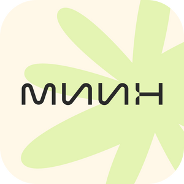
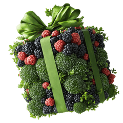

МИИН × Сеченовский университет
Новый курс
«Консультант по интегративному управлению здоровьем 2.0»
Программа разработана совместно с Первым МГМУ им. И.М. Сеченова
Подробнее о курсе
№ 1 в ЗОЖ-образовании
38 000+ выпускников
МИИНобучение питанию и здоровью
Учим управлять здоровьем и помогать другим.
Получите грант на обучение в МИИН!
День рождения МИИН — выделили по 100 000 ₽ для каждого нового студента
Получить грант01 профессии
МИИН × Сеченовский университет
Новый курс
Программа разработана совместно с Первым МГМУ им. И.М. Сеченова
Подробнее о курсеПрофессия
Восстановите себе полноценное здоровье и получите востребованную профессию за 1 год
О профессииПрофессия старт 26 октября
Возьмите под контроль здоровье ребенка и получите востребованную профессию детского консультанта по питанию, обучаясь по образовательной программе университетского уровня
О профессии02 бесплатно

Бесплатный мини-курс
4